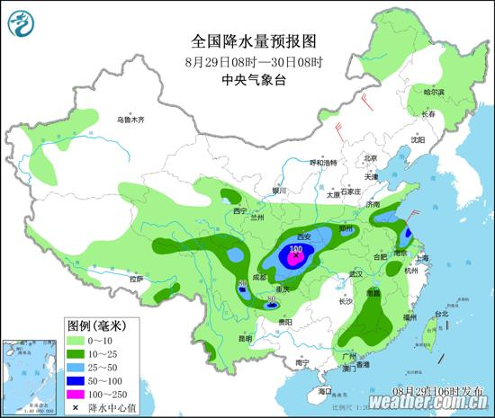

中国天气网讯 北京今天（8月29日）以多云为主，西部、北部山区有小雨，最高气温将升至27℃。明后天，北京最高气温继续回升，最高气温29℃-31℃，昼夜温差拉大到10℃以上，大家请注意适时增减衣物，谨防感冒。
昨天，北京大部出现小雨，监测显示，28日12时至19时，全市平均降水量1.6毫米，全市最大降水量为延庆小海陀的6.6毫米。雨水添凉意，截至17时，南郊观象台最高气温为23℃。
受冷空气和副热带高压外围暖湿气流共同影响，25日夜间开始，陕西降水进一步加强、强降水范围逐步扩大。实况监测显示，24日0时至28日12时，陕西106个区县的1889个监测站出现降水，58站累计降水超过100毫米，865站累计降水超过50毫米，最强降水主要位于汉中地区。在雨水影响下，各地气温明显下降，秋意逐渐显现。
